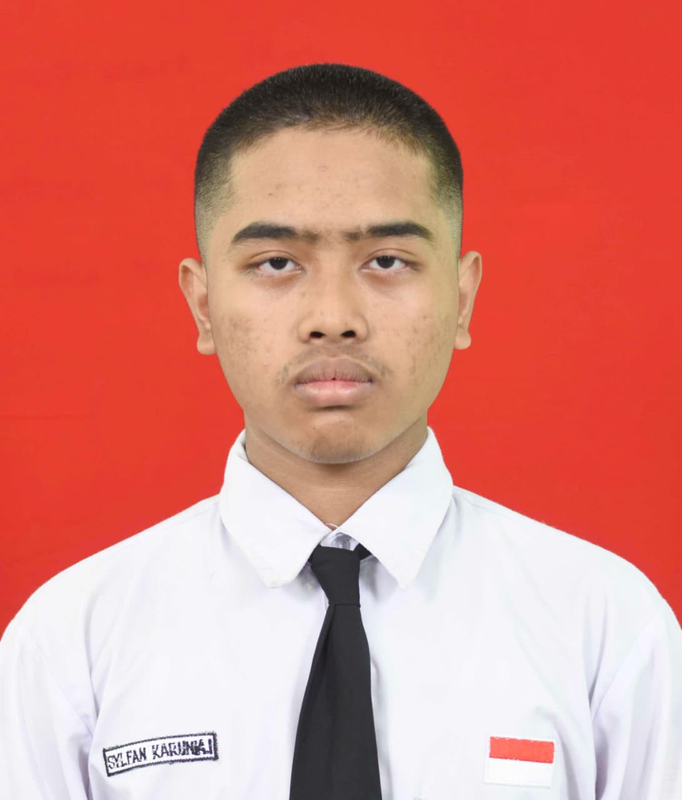

Sylfan Karunia Ilyasa
Begginer Web Dev
Saya mengubah ide-ide kompleks menjadi aplikasi web yang indah, fungsional, dan berpusat pada pengguna.

Tentang Saya
Halo! Saya Sylfan, seorang Programmer yang berbasis di Tasikmadu dengan pengalaman lebih dari 1 tahun. Saya memiliki Keinginan mendalam Untuk Mempelajari Website.
Keahlian Saya
Web Dev
HTML, CSS, JS
AI Web Dev
Lovable, Gemini Canvas
Database
SQL, Supabase
Proyek Unggulan
Promt Ai Dan Web Ai
Promt Ai Dan Web Ai
Platform berbasis AI untuk, dibangun menggunakan teknologi modern untuk pengalaman pengguna yang intuitif dan responsif.
Kunjungi WebAplikasi Prompt Generator
Web Promt Generator
Web yang dirancang untuk membantu pengguna membuat prompt yang optimal dan kreatif, Didukung oleh gemini ai dan di hosting di vercel
Kunjungi WebWeb Portofolio Pribadi
Web Portofolio
Proyek tentang Portofolio Pibadi Untuk kepentingan pribadi
Lihat PortofolioMari Bekerja Sama
Saya selalu terbuka untuk mendiskusikan proyek baru, ide kreatif, atau peluang untuk menjadi bagian dari visi Anda. Punya pertanyaan? Jangan ragu untuk menghubungi.
Mulai Percakapan